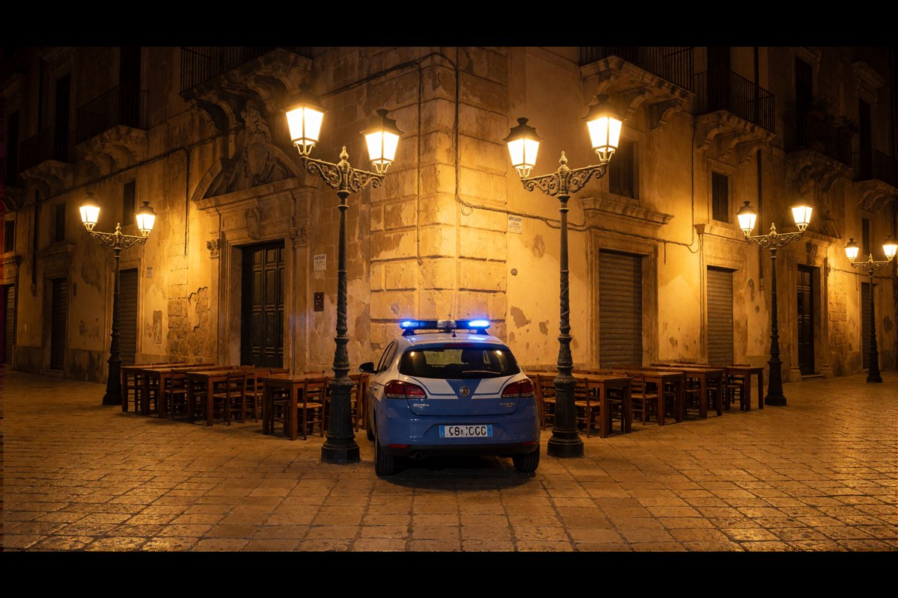

Sicilia · 22 novembre 2026
Palermo, petardi contro la polizia in piazza Sant'Anna

Due agenti feriti e due giovani arrestati nel centro storico, durante i controlli nelle zone rosse. Tutto è cominciato con gli schiamazzi segnalati dai residenti, poi sono arrivati petardi e bottiglie. Lunedì il processo per direttissima.
di Franco Zanghì
Due poliziotti feriti e due giovani arrestati a Palermo. Un uomo e una donna sono accusati di aver aggredito gli agenti durante una notte di scontri nel centro storico.
È successo nella notte fra sabato e domenica, in piazza Sant'Anna, a due passi dal mercato della Vucciria. Come scrive l'ANSA, gli agenti erano in piazza per i controlli nelle zone rosse, le aree in cui il questore può disporre verifiche rafforzate.
Secondo PalermoToday, tutto è cominciato con gli schiamazzi, dopo le segnalazioni di alcuni residenti. Poi un gruppo di giovani ha lanciato petardi e bottiglie contro i poliziotti.
I due arresti
Sono arrivati altri agenti in aiuto, che hanno riportato la calma e identificato alcuni dei ragazzi. Un uomo e una donna, però, avrebbero aggredito due poliziotti: uno è stato ferito al braccio, l'altro alla schiena e al ginocchio.
I due agenti sono stati portati in ospedale e dimessi con una prognosi di cinque giorni. Per i due arrestati vale la presunzione d'innocenza: il processo per direttissima è fissato per la mattina di lunedì 23 novembre.
La malamovida e le zone rosse
Non è un episodio isolato. Il centro storico di Palermo è da mesi il terreno su cui si misura la cosiddetta malamovida: locali che sforano gli orari, musica fino all'alba, residenti che chiamano la polizia e controlli che si intensificano nei fine settimana.
Le zone rosse sono lo strumento scelto per rispondere. Servono a identificare, allontanare e, quando serve, a sanzionare. Ma funzionano solo se chi presidia la piazza non resta da solo: sabato notte gli agenti in piazza Sant'Anna erano pochi, e hanno avuto bisogno dei rinforzi.
Il Giornale di Sicilia, LiveSicilia e BlogSicilia raccontano la stessa scena, con lo stesso bilancio: due feriti fra le forze dell'ordine, due arresti, nessun ferito fra i giovani.
Il punto
Un petardo lanciato contro una persona non è una goliardia e non è folklore: è un oggetto che ferisce. E quando il bersaglio è un agente in servizio, la questione smette di essere una lite di quartiere.
Resta però una domanda, che nessun arresto risolve: bastano i controlli a rendere tranquille le notti del centro storico, o serve anche che qualcuno si occupi di quelle piazze prima che faccia buio?
Fonti
- PalermoToday, «Prima gli schiamazzi in piazza Sant'Anna, poi il lancio di bottiglie e petardi contro la polizia: arrestati due giovani», 22 novembre 2026
- Gazzetta del Sud, «Notte di follia a Palermo, petardi e bottiglie contro la polizia in piazza Sant'Anna: due arresti e due agenti feriti», 22 novembre 2026
- LiveSicilia, «Petardi e bottiglie contro la polizia in piazza Sant'Anna: due fermati», 22 novembre 2026
- BlogSicilia, «Agenti di polizia aggrediti in piazza Sant'Anna da un gruppo di giovani», 22 novembre 2026
- NewSicilia, «Palermo, malamovida in centro storico: petardi e bottiglie contro i poliziotti, arrestati due giovani», 22 novembre 2026
- ANSA e Giornale di Sicilia, le ricostruzioni del 22 novembre 2026
Le due persone arrestate sono accusate e non condannate: vale per loro la presunzione d'innocenza fino a un'eventuale sentenza definitiva. Il processo per direttissima era fissato per il 23 novembre 2026, il giorno dopo la pubblicazione.